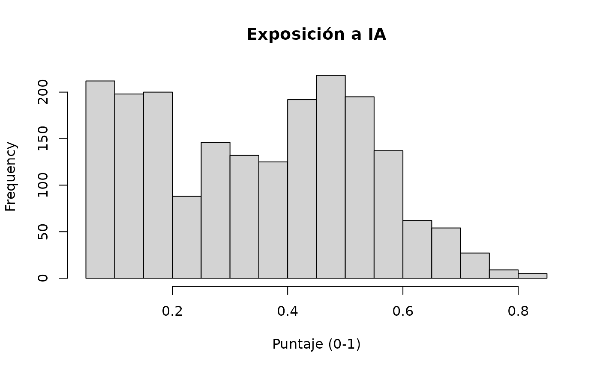

Cruzar ocupaciones con el índice de exposición a inteligencia artificial
Source:R/ia_exposicion.R
ia_exposicion.RdAgrega a los microdatos el índice de exposición a IA generativa por ocupación, desarrollado por Walter Omar Manky Bonilla, con la asistencia de investigación de Valentina Linares Herrera, usando Claude Sonnet 4.6 (Anthropic). El índice mide el grado en que las tareas de cada ocupación pueden ser asistidas o sustituidas por IA generativa, usando un puntaje continuo de 0 a 1.
Arguments
- data
data.framecon microdatos de EPEN/EPE procesados concno().- var_cno
Variable con el código CNO 2015 de 4 dígitos. Si es
NULL(por defecto) se elige por fila según la columnaclasificador:cno_codpara CNO 2015 ycno_homologadopara CO-95.- score
Qué puntaje agregar. Opciones:
"mean"(por defecto): puntaje medio de exposición por ocupación."median": puntaje mediano."ambos": agrega tanto media como mediana.
- incluir_tipo
Lógico. Si
TRUE, agrega el tipo de impacto predominante y los conteos de tareas por tipo. Por defectoFALSE.
Value
El mismo data.frame (mismas filas y orden) con columnas adicionales:
- ia_cno
Código CNO 2015 usado para el cruce.
- ia_score_mean
Puntaje medio de exposición a IA (0-1).
- ia_score_median
Puntaje mediano (si
scorees"median"o"ambos").- ia_cobertura
"con_score","sin_score"(código CNO válido sin puntaje en el índice),"codigo_no_encontrado"(4 dígitos que no existen en el CNO 2015),"sin_homologacion"(CO-95 sin equivalencia única) o"sin_codigo".- ia_tipo
Tipo de impacto con más tareas (
A,SoN);NAsi hay empate, si la ocupación no tiene tareas o no está en el índice.- ia_empate
TRUEsi dos o más tipos empatan en el máximo;NAsi no hay tareas o índice.- ia_tipo_estado
"predominante","empate","sin_tareas"o"sin_indice".- ia_total_tareas, tipo_A_aumento, tipo_S_sustitucion, tipo_N_nulo
Conteos de tareas del índice.
Las columnas de tipo de impacto, empate y conteos de tareas se agregan
solo con incluir_tipo = TRUE.
Details
El índice fue construido evaluando las tareas de cada ocupación del Clasificador Nacional de Ocupaciones (CNO 2015) con tres corridas independientes del modelo Claude Sonnet 4.6, consolidando el resultado por consenso. Cada tarea recibe:
Un puntaje continuo (0-1) de exposición.
Un tipo de impacto:
A(aumento/augmentation),S(sustitución),N(impacto nulo).
El índice final por ocupación es la media de los puntajes de sus tareas. Correlación con el índice de la OIT: r = 0.85.
Esta corrida actualiza el enfoque publicado por Manky (2025), pero sus puntajes no son los publicados originalmente por el INEI: conserva puntajes continuos y aplica reglas revisadas para empates, ambigüedades y tipo de exposición.
Bases EPE (CO-95)
El índice está definido en CNO 2015 a 4 dígitos. En bases EPE se usa
cno_homologado (de cno(homologar = TRUE)): solo las ocupaciones con
equivalencia única reciben puntaje. Las ambiguas quedan en NA con
ia_cobertura = "sin_homologacion"; nunca se cruza un código CO-95 ni un
código agregado (1-3 dígitos) con el índice. En una base que une EPE y
EPEN (con la columna clasificador de cno()) cada fila usa su código.
See also
cobertura() para resumir la cobertura por encuesta y año.
Examples
# Con la muestra incluida
muestra <- cno(muestra_epen_2024)
#> ℹ Clasificador segun la encuesta de la base: CNO_2015
muestra <- ia_exposicion(muestra)
#> ℹ Filas con score de IA: 2000 (100%).
#> ℹ Resumen por encuesta y ano: `cobertura()`.
# Ver distribución de exposición
hist(muestra$ia_score_mean, main = "Exposición a IA", xlab = "Puntaje (0-1)")

if (FALSE) { # \dontrun{
epen_2024 <- descargar(year = 2024) |>
cno() |>
ia_exposicion(score = "ambos", incluir_tipo = TRUE)
# Ingreso promedio ponderado según tipo de impacto predominante
indicadores(epen_2024, "ingreso_promedio", por = "ia_tipo")
# Base EPE: el cruce usa cno_homologado automáticamente
epe_2019 <- cno(readRDS("epe_2019.rds"), homologar = TRUE) |>
ia_exposicion()
cobertura(epe_2019)
} # }